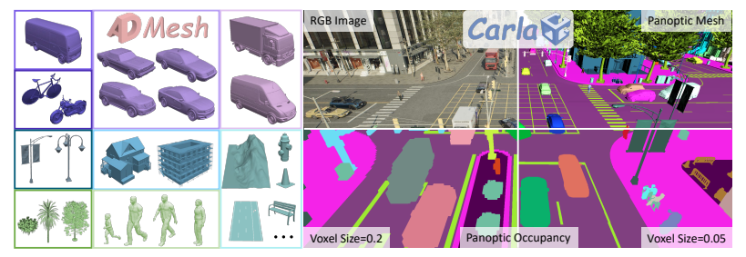
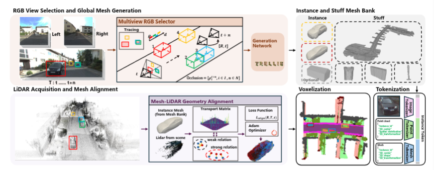
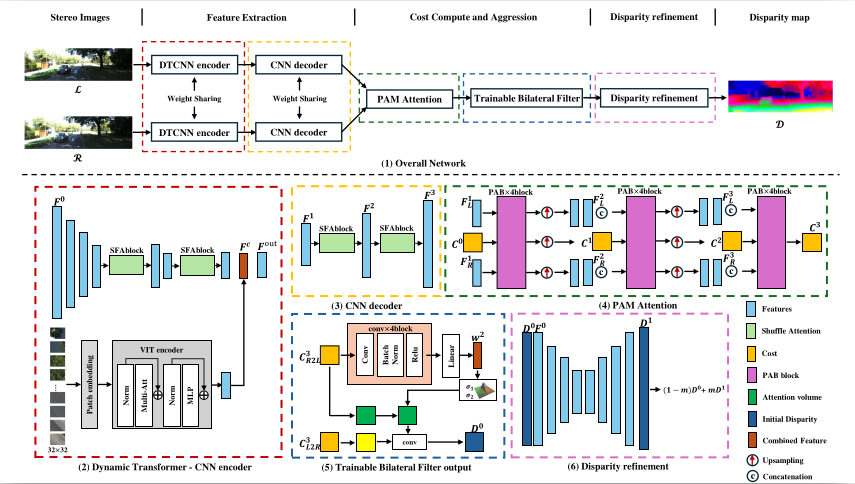

IEEE/CVF Conference on Computer Vision and Pattern Recognition (CVPR), 2026 Accepted (PC Decision · Final Score 455)
A large-scale instance-level panoptic occupancy benchmark built on the CARLA simulator, featuring multi-modal data collection, pedestrian mesh extraction and reconstruction.

Under Review Under Review
A large-scale instance-level dataset built on KITTI-360 with a data processing pipeline for automatic instance extraction, instance segmentation and mesh reconstruction of dynamic objects — targeting geometrically complete outdoor scene understanding.

IEEE International Conference on Real-time Computing and Robotics (RCAR), 2025
TBSMNet, an unsupervised stereo matching network integrating a hybrid Transformer–CNN encoder with a trainable bilateral filter for adaptive noise suppression. Achieves significant accuracy improvements on SceneFlow and KITTI.
IEEE International Conference on Real-time Computing and Robotics (RCAR), 2025
A collaborative dual-branch learning framework for robust and real-time road crack detection, validated on a robotic sensing platform.